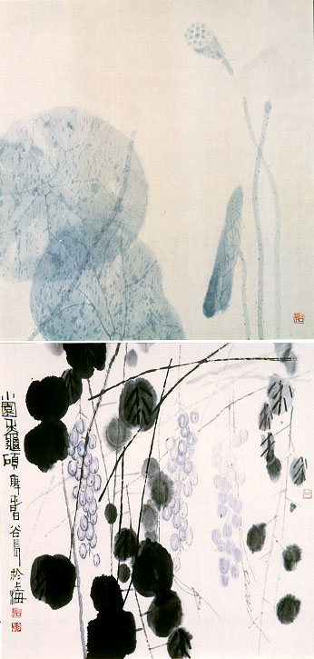

義助慰安婦 —— 李敖百件珍藏義賣藝術品（第22件） 品 名： A22. 陳谷長「蓮荷圖」與「葡萄圖」（兩件一組） 預估價： 10 萬 成交價： 11 萬 說 明： 本件作品是中國大陸傑出現代藝術家陳谷長先生所畫。兩幅畫的筆觸和用色都極為淡雅而耐人尋味。兩幅畫作都是李敖好友高信疆先生送的。 
本件作品是中國大陸傑出現代藝術家陳谷長先生所畫。兩幅畫的筆觸和用色都極為淡雅而耐人尋味。兩幅畫作都是李敖好友高信疆先生送的。